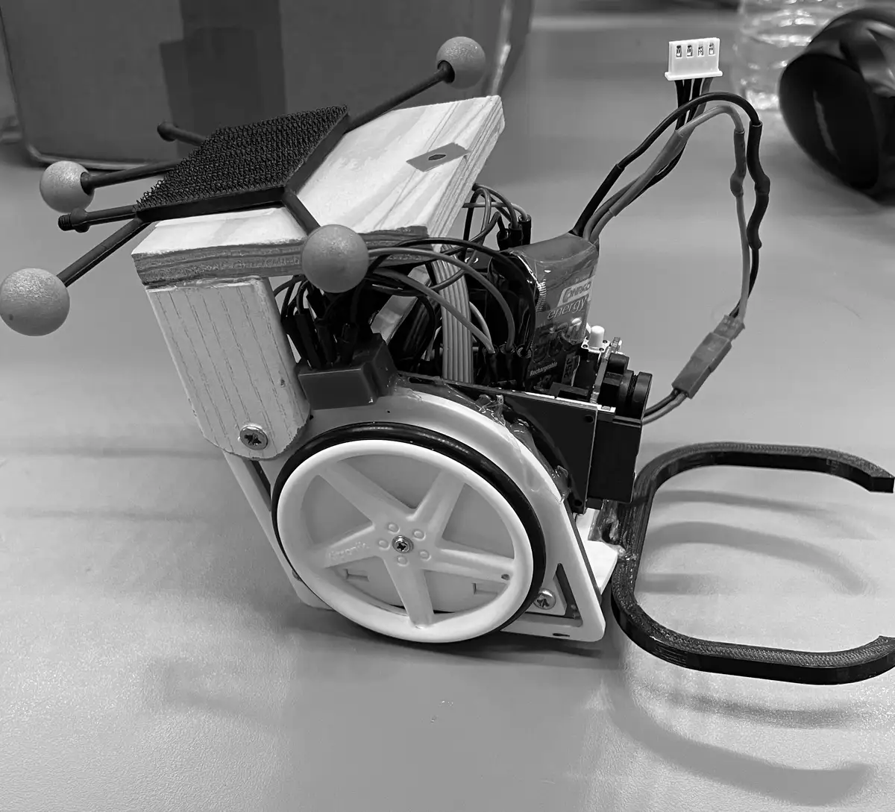

0002
Autonomous ball-collecting robot
A solo build during CPGE. Vision guidance on the ball’s bearing; cascaded PI loops on guidance and wheel speed; DC motors, a 1:24 gearbox and encoders.
G(p) = 4/(1 + 0.024p) · Kp 44 · Ti 0.17 s · PM 66° · ±0.5–1 cm